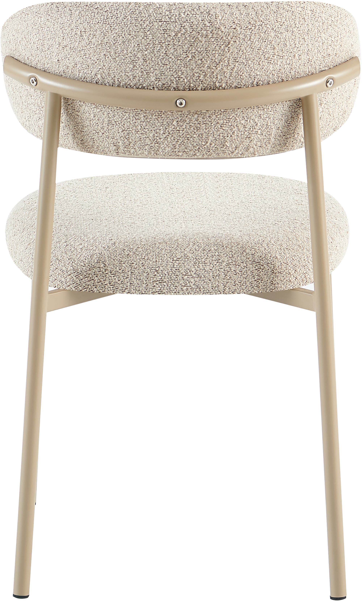
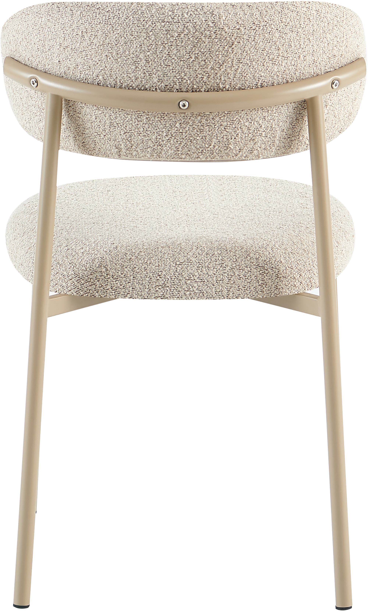
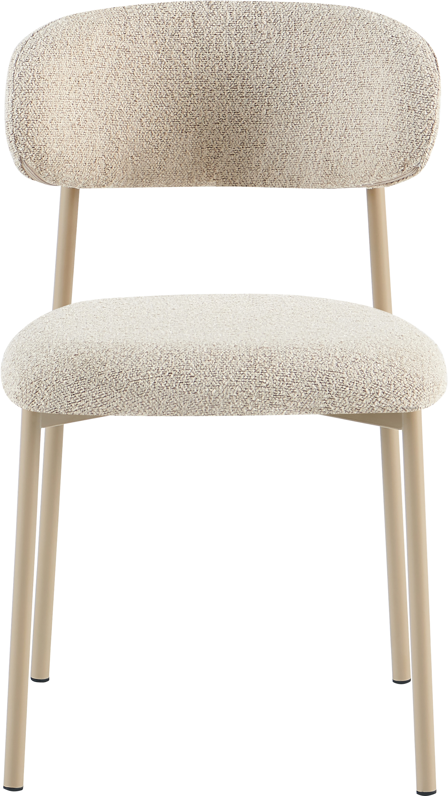
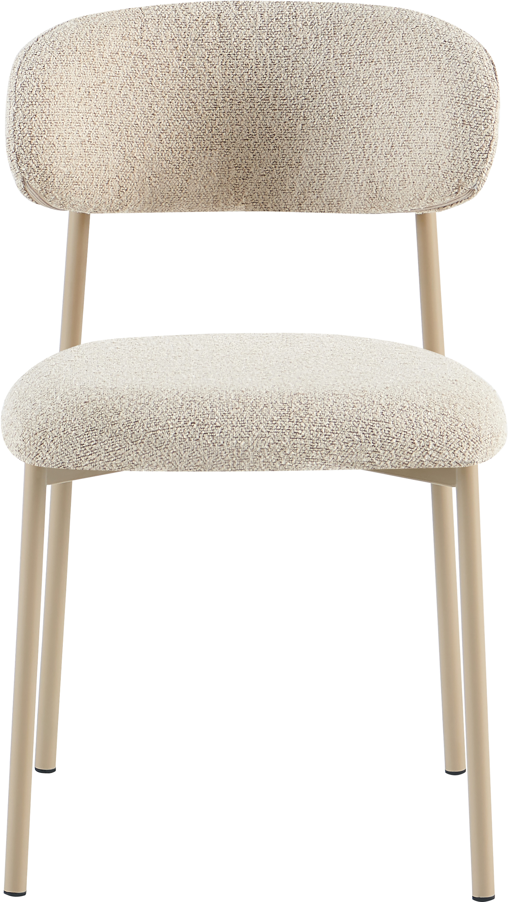

Bow dining table chair khaki
198099

 

 



Description
The Bow dining chair in khaki is a versatile and elegant seating option designed to complement a wide range of interior styles. This chair belongs to the Gold tier, representing a high standard of design and comfort within the NEST & LIVING collection. Its finely upholstered seat and backrest with soft foam padding provide excellent comfort, while the sturdy metal frame combined with plywood elements ensures durability and stability for everyday use. The chair’s warm khaki fabric adds a cozy touch to dining areas, enhancing the overall ambiance. Assembly is straightforward, requiring minimal effort and time. With its premium finish and thoughtful construction, the Bow dining chair is an excellent choice for enhancing your home dining experience.
Technical specifications
| Tier | Gold |
|---|---|
| Color | Khaki |
| Upholstery | Fabric with soft foam padding |
| Frame | Metal with plywood elements |
| Assembly | Easy, minimal effort |
| Use | Indoor dining |